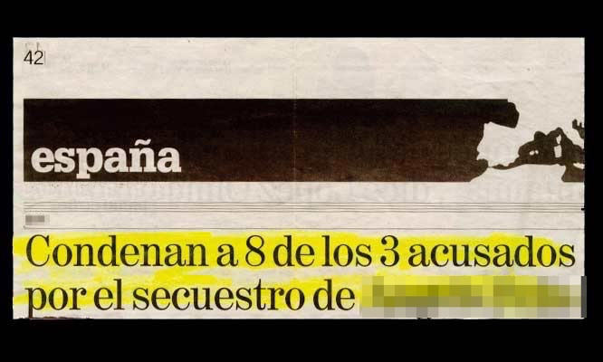
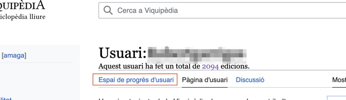
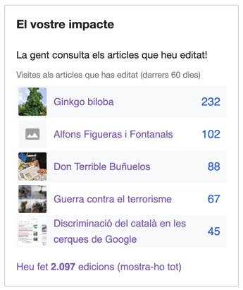
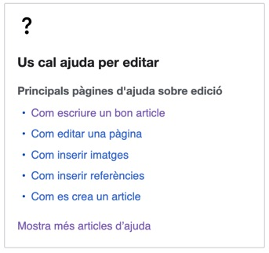
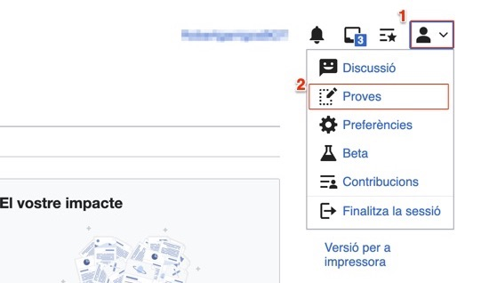

Què és la Viquipèdia?
*Què sabeu de la Viquipèdia?
La Viquipèdia és:
una enciclopèdia…
…una mica especial.
La Viquipèdia és lliure!
Qualsevol persona la pot consultar.
Qualsevol persona la pot editar.
Qualsevol persona la pot replicar…
…si la cita com a font (reconeixement)…
…i es comparteix amb la mateixa llicència.
https://w.wiki/6Vkk
La Viquipèdia és col·laborativa
Els articles no tenen propietaris.
Les normes editorials i els continguts es consensuen.
La Viquipèdia és en línia
Accessible a tot el món…
…en tot moment.
La Viquipèdia és independent
La Viquipèdia té 321 idiomes diferents.
https://meta.wikimedia.org/wiki/List_of_Wikipedias
Cada idioma és independent.
La Viquipèdia en català no és una còpia de l'anglesa.
La Viquipèdia és gratuïta
Està editada i administrada per voluntaris…
…organitzats en entitats sense ànim de lucre.
La Viquipèdia costa diners
Manteniment infraestructura informàtica.
Manteniment personal de gestió.
Per què és tan important la Viquipèdia?
Principal font de coneixement
Món: 7ª pàgina més visitada
https://www.similarweb.com/top-websites/
Catalunya: 40 milions de visites mensuals
https://stats.wikimedia.org/#/ca.wikipedia.org
Català: 127è idioma per nombre de parlants…
https://www.ethnologue.com/insights/ethnologue200/
…Viquipèdia en català és la 20ª de les 321
https://wikistats.wmcloud.org/display.php?t=wp
Viquipèdia en català
2ª Viquipèdia del món a tenir articles
https://w.wiki/6Sia
1ª Viquipèdia del món en els 1.000 articles bàsics
https://w.wiki/tzf
9ª Viquipèdia del món en els 10.000 articles bàsics
https://w.wiki/6VsS
La Viquipèdia és imperfecte
La Viquipèdia té errors
Equivocar-se és humà
La Viquipèdia té errors
Són molt fàcils de corregir
La Viquipèdia NO és
NO és un contenidor d'obres d'autor
NO és un espai d'opinió
NO és un espai de promoció
La Viquipèdia NO és una font fiable per ella
mateixa
https://w.wiki/wbY
Regles del joc
Creació de coneixement vs. difusió del
coneixement
https://w.wiki/6W5K
Autentificar veracitat vs. verificar
autenticitat
https://w.wiki/6W5L
Objectivitat vs. neutralitat
https://w.wiki/6W5N
Continguts privatius vs. continguts lliures
https://w.wiki/6W5k
Referències
Fonts primàries
https://w.wiki/6W5q
Fonts secundàries
https://w.wiki/6W5r
Fonts fiables
https://w.wiki/6W5v
Com podem començar?
Què cal per fer una modificació?
Algú amb ganes de millorar un article
Un contingut referenciat
Saber treballar amb un editor de text
Què podem modificar?
Sobre el que llegim
Canviar per millorar
Corregir errors, ampliar o enriquir
Creció d'un usuari
https://w.wiki/6W63Espai de progrés d'usuari
Suggeriment d'edicions per nivell de dificultat
https://w.wiki/6W6C
Impacte
Ajuda
Espai de proves
Consulteu els vídeos sobre els editors visual i de codi
https://w.wiki/6W63
Condicions d'us
NO són aplicables la majoria de normes.
NO cal seguir el llibre d'estil ni cercar el consens.
SÍ cal mantenir el sentit comú.
NO es permet contingut maliciós o difamatori.
Traducció d'articles
Suggeriments de traduccions
https://w.wiki/6W93
Viquiprojectes i viquimaratons
Agenda d'activitats
https://w.wiki/MQi
Buscar ajuda
Ajuda
https://w.wiki/6WC6
Taverna
https://w.wiki/6WC9
Buscar ajuda
Portal viquipedista
https://w.wiki/6XNX
Mentorització
https://w.wiki/34Uo
Moltes gràcies!
Preguntes?